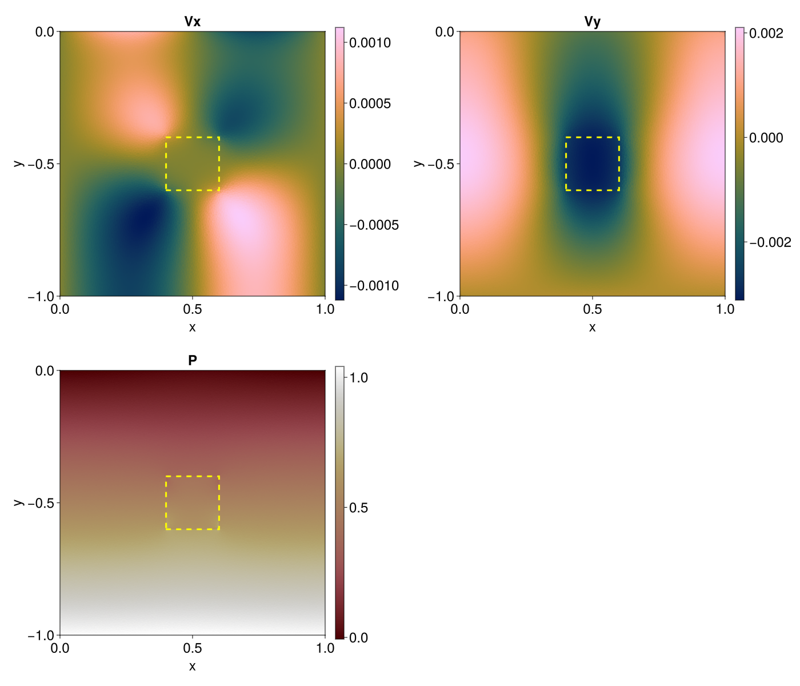

Two-dimensional sinking block
A denser, more viscous rectangular block sinks through a lighter matrix under gravity. The example is the compact end-to-end exercise of the package's 2-D Stokes path: an interface-conforming Gmsh mesh, the T7 (quadratic-plus-bubble) / P1-disc element pair, the Powell–Hestenes/DYREL saddle-point solver, and a discrete adjoint that differentiates an observation-window velocity objective with respect to density and viscosity using Enzyme.
julia --project=examples examples/miniapps/stokes/sinking_block/sinking_block.jl
julia --project=examples examples/miniapps/stokes/sinking_block_adj/sinking_block_adj.jlGeometry and mesh
Both scripts build the same square, Lx = Ly = 1, but place it differently. sinking_block.jl meshes x ∈ [0,Lx], y ∈ [-Ly,0], so gravity g = (0,-1) pulls straight down toward the bottom of the domain and the inclusion sits at (Lx/2, -Ly/2). sinking_block_adj.jl builds the identical mesh and then shifts every coordinate by (-Lx/2, Ly/2), re-centring the domain — and the inclusion — on the origin; this only changes where boundaries and the inclusion are found in the script, not the discretisation itself.
build_gmsh_t7_rectangle_inclusion_mesh (in examples/gmsh_meshing.jl) fragments the domain rectangle and the inclusion rectangle with gmsh.model.occ.fragment before meshing, so the material interface lies exactly on triangle edges — a conforming mesh, unlike the 3-D example's staircase approximation of the block. Gmsh returns 6-node P2 triangles; add_t7_bubbles! appends the seventh, interior bubble node that turns them into T7 elements. half_width sets the inclusion half-width in both directions and max_area the target triangle area.
Every pressure triangle takes a phase from its centroid: phase 1 outside the inclusion, phase 2 inside. η, ρ0, G, α, and K are two-entry tuples indexed by that phase.
| Quantity | Value | Meaning |
|---|---|---|
half_width | 0.1 | inclusion half-width in both directions |
η | (1.0, 100.0) | matrix and inclusion shear viscosity |
ρ0 | (1.0, 2.0) | matrix and inclusion reference density |
K, G | (Inf, Inf) | bulk/shear modulus — Inf gives a purely viscous, incompressible response |
g | (0.0, -1.0) | gravity vector |
ϵ_tol | 1e-6 | relative combined residual tolerance |
γfact | 20.0 | Powell–Hestenes augmentation strength |
max_area (default 1/64²) and show_plot are the forward script's only keyword arguments; every other row above is a constant inside the script body. The adjoint script's main exposes far more of these as keywords instead — η_incl (the inclusion viscosity, default 1.0), Δt, ncheck, ϵ_tol, iterMax, total_iterMax, their adjoint_* counterparts, γfact (default 40.0), CFL_v, c_fact, and the power-iteration controls for λmax — see its docstring for the complete list. half_width, ρ0, K, G, and the adjoint's observation window (below) remain fixed inside its body.
Discretization
Velocity uses the T7 element: a standard 6-node quadratic (P2) triangle plus one interior bubble function, ReferenceElement(QuadraticElement{2,7,Float64}). Pressure uses three discontinuous, cell-local linear modes (1,ξ,η), ReferenceElement(LinearElement{2,3,Float64}). The bubble is what makes the pair inf-sup stable; a plain P2/P1-disc pair would reintroduce pressure checkerboard modes.
Both fields are combined into one MixedMesh(mesh_v, element_P) (Mesh), and MixedMeshCache precomputes both fields' geometry at the velocity quadrature points once. Unlike the 3-D example, the 2-D example does build a StokesDR: the mixed-mesh Arrow–Hurwicz/DYREL solver needs its lumped pressure mass, viscosity-weighted pressure-step array γP (from FEMTools.assemble_viscosity_weighted_pressure_scaling!), stress history, and diagonal preconditioner, all of which live there.
Boundary conditions
Free slip on all four walls: vx_nodes and vy_nodes are the boundary nodes (mesh_v.Γnodes) lying on a wall normal to x or y respectively, found with a coordinate tolerance rather than exact equality. Two DirichletBoundaryConditions pin the wall-normal component to zero and are applied once with apply_bc! before the first residual assembly; unlike the 3-D solver's fixed_nodes/bc_values tuple pair, the mixed-mesh solver takes bc_vx and bc_vy positionally and re-applies them internally after every update. Pressure carries no Dirichlet constraint; it floats relative to the initial guess described next.
Forward solve
Before the Powell–Hestenes/DYREL solve, both scripts warm-start the pressure field: they collect the mesh's unique P1 corner nodes into a small scalar mesh, solve a hydrostatic pressure profile on it with LithostaticPressureDR, and copy the result into both dr.P and dr.P0. This gives the outer pressure iteration a physically-scaled starting point instead of zero, rather than acting as a hard constraint on the converged answer.
The forward call is solve_stokes_dyrel!(dr, mesh_stokes, cache, bc_vx, bc_vy, Δt, γP; phases_v, phases_P, τ_old, plastic, ncheck, ϵ_tol, iterMax, total_iterMax, rel_drop0, ...), the same mixed-mesh entry point described in Stokes: an outer Arrow–Hurwicz pressure update wrapping an inner Chebyshev-accelerated DYREL sweep on the momentum residual. iterMax bounds one inner sweep, total_iterMax the whole solve, and rel_drop0 how far the inner velocity residual must drop before the outer pressure update fires.
After convergence, update_stokes_current_stress! refreshes dr.τ and compute_strain_rate_stress_postprocess derives nodal strain-rate and stress diagnostics (including the second invariant tauII) from the converged velocity. write_stokes_vtk writes stokes_2D_sinking_block.vtk under output_stokes/, holding velocity, pressure, phase, and those postprocessed fields. With show_plot = true (the default), the script also displays a three-panel GLMakie figure of Vx, Vy, and P with the inclusion outlined.

Vy is negative in a vertical band above and below the inclusion — where the sinking block drags the surrounding matrix down with it — and positive near the side walls, where the flow returns upward. Vx shows the four-lobed circulation typical of a localized sinking load in a bounded box. P is dominated by the depth-dependent lithostatic gradient, with a small local perturbation at the inclusion.
Discrete adjoint
For the linear system and scalar objective
\[A(m)u=b(m), \qquad J=c^T u,\]
the sensitivity to a material parameter $m$ follows from one transpose solve
\[A^T\lambda=c, \qquad \frac{\mathrm dJ}{\mathrm dm} =\lambda^T\left(\frac{\partial b}{\partial m} -\frac{\partial A}{\partial m}u\right),\]
exactly as in the 3-D adjoint. The objective itself differs: rather than a plain nodal average, it is the consistently assembled finite-element integral
\[J(v_y) = -\int_{\Omega_{\mathrm{obs}}} v_y \, \mathrm d\Omega,\]
over the observation box objective_bounds = (-0.2, 0.2, 0.2, 0.3), positioned just above the inclusion. assemble_objective_vy! builds the load c = ∂J/∂v element by element, subtracting Nᵢ dΩ at every quadrature point that falls inside the box — so a cut element contributes only the shape-function-weighted fraction of itself that lies in the window, rather than an all-or-nothing indicator.
The viscous operator is symmetric, so Aᵀ = A and solve_stokes_adjoint_dyrel! reuses the forward's frozen transpose Jacobian, preconditioner, and boundary nodes with c as its momentum load — see Stokes for the dense-block caching this relies on.
Material sensitivities are obtained differently than in 3-D, where stokes_material_gradient_3d contracts the forward and adjoint velocities analytically. Here, launch_material_contraction! assembles the per-element contraction λᵉᵀ Rᵉ(m) from the true element residual, and Enzyme reverse mode (Enzyme.autodiff_deferred) differentiates that assembly with respect to per-element density and viscosity fields in one pass, giving both density_sensitivity and viscosity_sensitivity at once. Summing the entries belonging to one phase gives that phase's scalar gradient; dividing by element area turns the raw integrals into a mesh-independent sensitivity density, used only for the summary plot.
Verification
test/test_stokes_adjoint_api.jl builds a small T7/P1-disc buoyancy case — the same element pair, free-slip walls, and observation-window objective as this example — and checks that solve_stokes_adjoint_dyrel! reproduces the density gradient obtained from centred finite differences on the same discrete objective, directly validating the transpose-consistency argument above without a separate sparse reference assembly.
Three-dimensional counterpart
The block-in-matrix problem has an independent three-dimensional version with its own mesh, element pair, and matrix-free solver: Three-dimensional sinking block. Use the 2-D pair to experiment with rheology — it carries the full stress-history / Powell–Hestenes machinery, including elasticity and plasticity; the 3-D pair is linear viscous only, but its matrix-free forward and adjoint solvers scale to much larger meshes.